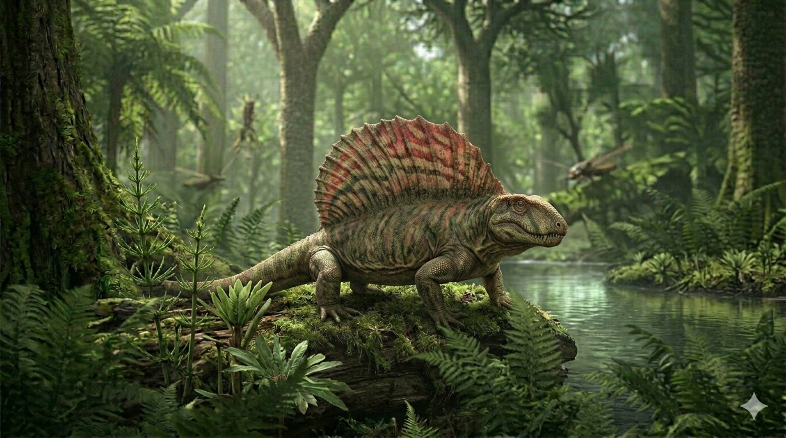

דימטרודון
The Solar-Powered Synapsid: Dimetrodon grandis

תיק מחקר: נתונים פיזיולוגיים
תקופת פעילות
295 עד 272 מיליון שנה
תור הפרם (Permian Period)
מסה גופנית (משקל)
200 עד 250 קילוגרם
משקל של אריה בוגר מודרני
ממדים (אורך)
1.7 עד 4.6 מטרים
כולל מפרש גבי בגובה של כ-מטר
תזונה
טורף-על (Hypercarnivore)
ניזון מדו-חיים ענקיים (Eryops), זוחלים צמחוניים ודגים.
סיווג אבולוציוני קריטי
סינאפסיד (Synapsid)
אינו דינוזאור. שייך לשושלת שהובילה להתפתחות היונקים.
01 // ניתוח אטימולוגי נרחב
| החלק בשם | שפת מקור | פירוש ומשמעות היסטורית |
|---|---|---|
| Di- | יוונית (δι-) | שניים / כפול התייחסות למערכת המורכבת של הלסת המכילה שני סוגי שיניים מובחנים. |
| Metr- | יוונית (μέτρον) | מידה / גודל החלק המקשר בשם המתאר את השוני בגדלים הפיזיים של השיניים בלסת. |
| -odon | יוונית (ὀδών) | שן (Tooth) הלחם מלא של השם: **"שיניים בשתי מידות"**. השם הוענק על ידי אדוארד דרינקר קופ (1878), כמאפיין המבשר את בואם של היונקים. |
אקולוגיה: מכונת החימום הקדומה
המפרש הגבי של הדימטרודון, שנתמך על ידי קוצי חוליות שהגיעו לגובה של מטר, לא היה לקישוט – הוא היה **מערכת תרמית משוכללת** שנתנה לו יתרון אבולוציוני מכריע.
היתרון התרמי בציד
כחיה בעלת "דם קר", הדימטרודון השתמש במפרש כ"פאנל סולארי" עשיר בכלי דם. הוא יכול היה להעלות את חום גופו ב-**20% מהר יותר** מכל טורף אחר. בזמן ששאר החיות היו איטיות וקפואות בבוקר, הדימטרודון כבר היה ב"טמפרטורת עבודה", מה שאיפשר לו לצוד אותן בקלות כשהן חסרות הגנה.
אידיאולוגיית ה"מפרש"
מעבר לחימום, המפרש שימש לקירור בשעות הצהריים על ידי הפנייתו לרוח. הוא שימש גם כ"כרזה" חברתית להפחדת יריבים ומשיכת בנות זוג. פציעה במפרש הייתה גזר דין מוות, שכן היא גרמה לאיבוד דם רב ולקריסת מערכת ויסות החום.
02 // נסיבות הגילוי והממצאים: שברים, כסף ומלחמות העצמות
הסיבה למשלחת (1877)
הגילוי של הדימטרודון ב-1878 היה תוצר של אגו וריצה לזהב מדעי. **אדוארד דרינקר קופ** היה בעיצומה של "מלחמת העצמות" האכזרית נגד יריבו מארש. קופ הרגיש שמארש "חונק" אותו באתרים המוכרים, ולכן החליט לפתוח חזית חדשה בטקסס, באזור ה-**"Red Beds"**, מקום שאיש לא חפר בו ברצינות לפני כן, בתקווה למצוא יצורים מתור הפרם. הוא שכר את חוקר הטבע **ג'ייקוב בול** שמצא במחוז וויצ'יטה גולגולת וקוצים ארוכים ושלח אותם לקופ בפילדלפיה. קופ זיהה מיד את המפרש ופרסם את התגלית בחיפזון.
מירוץ המוזיאונים ומציאת השלדים השלמים (1900-1910)
בדיוק כמו באדפוזאורוס, הממצאים הראשונים היו רק שברים. בתחילת המאה ה-20, המוזיאונים הגדולים בארה"ב היו שקועים ב"מירוץ תצוגה" וחיפשו בנרות שלדים שלמים ומרהיבים כדי להציג את מפלצת המפרש באולמותיהם.
מי שנכנס לתמונה היה צייד המאובנים האגדי **צ'ארלס שטרנברג**. הוא הבין את הפוטנציאל הכלכלי ויצא למשלחות ממוקדות בטקסס.
תגלית הזהב של שטרנברג והפאזל שהושלם
המאמץ של שטרנברג השתלם בענק. באזור המכונה **תצורת קליר פורק (Clear Fork Formation)** בטקסס, וספציפית ב**מחוז ארצ'ר (Archer County)** וביילור, שטרנברג הצליח לחלץ **שלדים מחוברים ושלמים כמעט ב-95% (Articulated)** של דימטרודון.
שלמות המאובנים הללו התאפשרה בזכות סביבת הציד של הדימטרודון: מישורי הצפה בוציים. כשהחיה מתה, היא נקברה במהירות בבוץ העמוק, מה שמנע מהטורפים לפרק את גופתה ושמר על המפרש שלם. השלדים הללו הפריכו לחלוטין את "מיתוס הלטאה" והוכיחו שהדימטרודון לא "זחל" על גחונו, אלא החזיק את גופו בתנוחת **"הליכה גבוהה" (High Walk)** שאופיינית ליונקים מוקדמים.